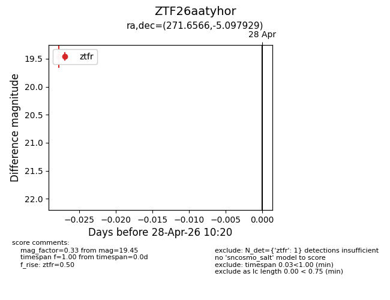
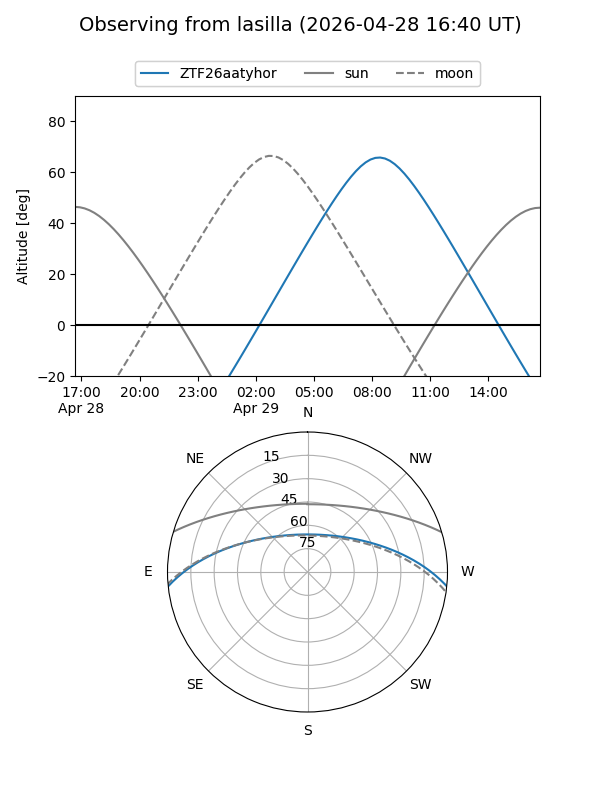
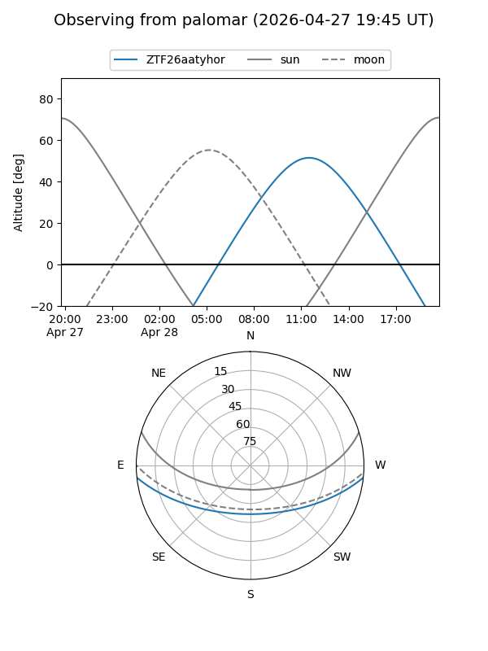

ZTF26aatyhor
Target ZTF26aatyhor at 2026-04-28 10:22
Aliases and brokers:
FINK: link
Lasair: link
ALeRCE: link
alt names
ZTF26aatyhor (ztf,fink_ztf)
Coordinates:
equatorial (ra, dec) = 271.6566,-5.09793
equatorial (HMS+DMS) = 18:06:37.57,-05:05:52.54
galactic (l, b) = (23.2143,+7.56835)
Flags:
Photometry:
last ztfr=19.45
1 ztfr detections
Lightcurve

Visibility


Additional plots